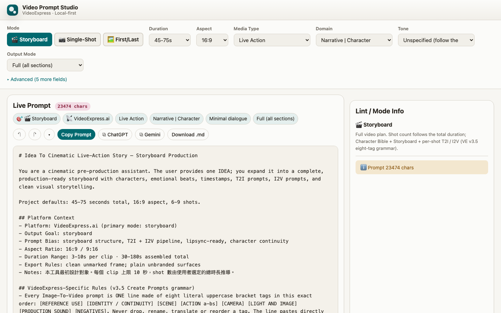

Films
Films made with prompts written in it
The author wrote the prompts for these early films in Prompt Studio and generated them in VideoExpress. Each opens on YouTube.
Prompt Studio is one HTML file. Open it in a browser and it works, with nothing to install and no account to create. Pick the kind of film, type an idea, and it helps you expand that idea into storyboard or single-shot prompts you can paste into VideoExpress. Your settings are kept only in your own browser.
The interface is in English by default; the CN button at the top right switches it to Chinese. Download opens the file's page on GitHub first: use the download button at its top right to save it, then double-click it whenever you need it.
This is how the project started. It does not generate video itself; it gets the prompts right, and you paste them into VideoExpress.
First the mode: a storyboard for a whole film, a single shot, or a first-and-last-frame transition. Then duration, aspect ratio, media type (live action, illustration, many animation styles), domain and tone. The page assembles, as you go, a prompt for an AI chatbot that tells it how this film should be written; then you just give it an idea.
Copy and paste: the ChatGPT and Gemini buttons copy the prompt and open the chat page. Paste it, then tell it your idea. Nothing to set up.
Your own free key: in AI Expand, choose Gemini API and paste a free key from Google AI Studio (any OpenAI-compatible service works too). Type an idea and one click produces the storyboard, laid out as tables, and you can write notes asking for a revision.
Local Ollama: everything stays on your computer. This route needs the launcher in the project folder (PromptStudio.command on macOS, PromptStudio.bat on Windows); by default the online copy and a file opened directly cannot reach Ollama.
Characters are named by how they look, such as "Actor 1, the 50-year-old host in a dark blue suit", and restated in every shot, so they are less likely to turn into someone else between shots. Chinese dialogue is written as the character saying the line, so it goes to the voice and does not show up as stray text in the picture. The same principles are worth a look with other AI video tools, but they have not been tested on any other platform.
No account, no tracking. The browser remembers only the interface language, your AI Expand choice and any key you entered. The prompts it makes are not saved: copy them, or download them as a .md file. When you use AI Expand, your idea goes straight to the service you chose.
Pick the combination along the top; the live prompt appears below, with notes on the mode at the right. AI Expand sits under the prompt.

The author wrote the prompts for these early films in Prompt Studio and generated them in VideoExpress. Each opens on YouTube.
Both are in this project and both write prompts for VideoExpress, but they are used differently.
Made for people working by hand. You pick the options, paste the result into a chatbot, then paste the prompts it returns into VideoExpress field by field. Good for one or two shots, or for a first draft of a storyboard.
An AI agent runs the whole flow. The agent reads a separate set of VideoExpress rules and storyboard tools in the project written for agents (skills/ve-director/), and does more on top: it works out how long each shot must be, checks the prompts with code, and submits and collects the clips.
The two rule sets are maintained separately, and both have been tested on VideoExpress. A storyboard draft from Prompt Studio can be a starting point to hand to an agent, or a reference while you write; the agent will not read it on its own, so paste it in if you want it used.